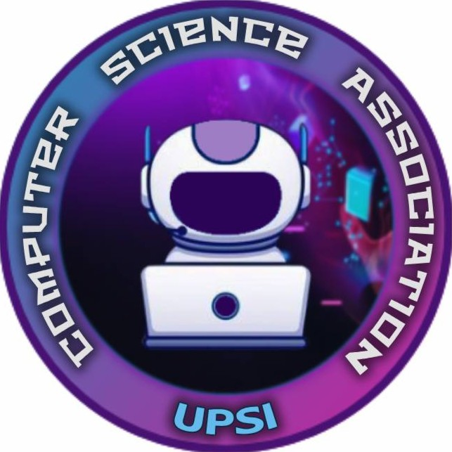

Diploma in Computer Science Student at Sultan Idris Education University
While I haven’t done any freelance work or large solo tech projects yet, my time at university has been full of meaningful involvement and growth experiences.
 I currently serve as the Yang Dipertua (President) of the Persatuan Sains Komputer at UPSI. In this role, I’m responsible for leading the association, coordinating programs, and acting as our official representative. If external organizations want to collaborate with our society, I’m usually the first point of contact.
Most of the time, I also serve as the Program Director, managing the planning and execution of our association’s events. These responsibilities have helped me develop strong leadership, teamwork, and communication skills, especially when working with diverse people under tight deadlines.
I’m actively exploring opportunities to expand my technical and professional knowledge. Recently, I joined a Tech Talk on “Student to Tech Pro”, which provided useful insights into the career journey in tech.
I also attended an AWS (Amazon Web Services) workshop. While it was just an introductory session, it sparked my interest in cloud technology, something I plan to explore further as I develop my skills.
I’m not yet active in sharing tech content online, but I understand how crucial an online presence is in the tech industry. As a student, I’m slowly building that presence, starting with this portfolio, and aim to grow into someone who not only learns but also contributes.